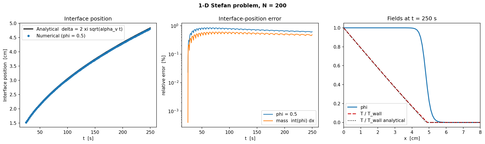

Research
Flagship
2D Incompressible Navier–Stokes: Pseudo-Spectral Solver and POD-Galerkin ROM
Research · Computational Fluid Dynamics · Reduced-Order Modelling
A verified Fourier pseudo-spectral solver for 2D incompressible Navier–Stokes, extended with a tensorial POD-Galerkin reduced-order model and DEIM hyper-reduction.
Problem
Solving the 2D incompressible Navier–Stokes equations on a doubly periodic domain to research-grade accuracy, then building a fast, independently verified reduced-order surrogate for repeated evaluation.
Approach
Vorticity-streamfunction formulation; Fourier pseudo-spectral spatial discretisation with 2/3-rule dealiasing; FFT-based Poisson solve; integrating-factor RK4 time integration. The reduced model is a discrete-L² POD-Galerkin projection with precomputed linear and quadratic operators, plus a DEIM hyper-reduction variant.
Verification
Validated against the Taylor-Green vortex exact solution and an independent manufactured solution, confirming fourth-order temporal and spectral spatial convergence; incompressibility held to machine precision; reduced operators verified against the projected full-order right-hand side.
Key finding
At rank 16, the tensor ROM reaches under 0.1% mean state error at 38.5× online speed-up on its training trajectory. A snapshot basis built from four training realisations reconstructs its own training data almost perfectly, but a genuinely new, unseen flow realisation at the same physical parameters is captured almost not at all (≈99% error at every tested rank) – a real, useful limitation of snapshot POD for flows without a fixed spatial structure.

Flagship
Phase-Field Modelling of Multiphase-Flow PDEs
Research · Scientific Computing · PDEs
A PDE-based framework for modelling vapour-liquid phase change and coupled flow/heat-transfer dynamics, built for 3D extensibility from the outset.
Problem
Modelling the coupled interface, flow, and heat-transfer physics of boiling (vapour-liquid phase change under turbulent flow) with a PDE formulation that stays numerically tractable and portable to 3D.
Approach
A conservative Allen-Cahn phase-field model is coupled with incompressible Navier-Stokes and an energy equation containing a latent-heat source term, following Roccon (2025). The resulting pressure Poisson equation has constant coefficients and is solved directly with FFTs, a property that holds in 3D and is the main motivation for choosing this method.
Mathematical model
- Conservative Allen-Cahn interface
- Incompressible Navier-Stokes
- Energy equation with latent-heat source
Numerical method
- FFT-based pressure Poisson solver
- Conservative finite-difference discretisation
- 2D/1D prototype, 3D solver implemented
Validation
The 2D/1D prototype is checked against two analytical solutions from Roccon (2025): bubble growth under a prescribed vaporisation rate, and the 1D Stefan problem. The bubble-growth benchmark is validated, reproducing the predicted linear growth rate with demonstrated second-order convergence as grid spacing is refined. The Stefan-problem benchmark is not validated: it matches the analytical solution only in an early transient, then fails outright (56% error by t = 250 s), traced to the simplified (non-probe-based) vaporisation-rate model compounding with physically incorrect periodic boundary conditions, both documented, open Year-1 implementation tasks.
Completed
- 2D bubble-growth benchmark, validated with second-order convergence
- Allen-Cahn mobility scaling validated against the boundedness criterion of Mirjalili, Ivey & Mani (2020)
- 3D solver implemented
Ongoing
- 1D Stefan-problem benchmark: known, documented failure past t ≈ 100 s
- 3D validation
- Probe-based vaporisation-rate model and non-periodic boundary conditions


Flagship
Finite-Element Solver for 2D Incompressible Flow: Schäfer–Turek Cylinder Benchmarks
Research · Computational Fluid Dynamics · Finite Elements
A Taylor–Hood finite-element Navier–Stokes solver in FEniCSx, verified by manufactured solutions and benchmarked against the standard DFG Schäfer–Turek steady and unsteady cylinder-wake test cases.
Problem
Solving 2D incompressible viscous flow past a cylinder to the accuracy standard required to reproduce a published community benchmark, not just a qualitatively plausible flow.
Approach
Velocity-pressure formulation on Taylor–Hood P2/P1 elements (FEniCSx/PETSc), ruling out checkerboard pressure modes by construction; Crank–Nicolson time integration for the unsteady case.
Verification
A manufactured-solution study confirms the theoretical convergence rates: O(h³) velocity-L², O(h²) velocity-H¹ and pressure-L².
Key finding
The steady DFG 2D-1 case reproduces all three reported quantities inside the published reference interval at the finest mesh. The unsteady 2D-2 case reproduces the pressure difference and Strouhal number inside the interval; peak drag and lift miss it by −0.19% and −0.64% – reported here as near-misses, not claimed as full agreement.

Flagship
Deterministic and Bayesian Inversion of Spatially Varying Darcy Permeability
Research · Inverse Problems · Uncertainty Quantification
Adjoint-based deterministic inversion and a full Bayesian (pCN/MCMC) treatment of an elliptic PDE-constrained inverse problem.
Problem
Recovering a spatially varying log-permeability field in an elliptic Darcy-flow model from noisy, spatially local pressure observations – both as a point estimate and as a full posterior distribution.
Approach
Adjoint gradients via UFL automatic differentiation, H¹/L² Tikhonov regularisation with discrepancy-principle selection, solved by L-BFGS-B. The Bayesian extension places a Karhunen–Loève-parameterised Gaussian prior over the field, sampled by preconditioned Crank–Nicolson (pCN) MCMC.
Verification
Forward solver verified by the method of manufactured solutions (inverse-crime avoided by using a different mesh/discretisation for data generation); adjoint gradient verified by a second-order Taylor-remainder test; the pCN sampler independently validated against an analytically tractable linear-Gaussian posterior.
Key finding
The H¹-seminorm regulariser reconstructs a smooth truth well but cannot recover sharp, localised structure regardless of regularisation strength – a regularisation-model mismatch, not a bug. For the full PDE posterior, effective sample size is low in several Karhunen–Loève dimensions with strong autocorrelation, so MAP, not the posterior mean, is used as the primary trustworthy point estimate.

Flagship
2D Elasticity FEM and SIMP Topology Optimisation
Research · Computational Mechanics · PDE-Constrained Optimisation
A verified 2D plane-stress elasticity solver driving a SIMP compliance-minimisation topology optimiser.
Problem
Finding the material layout within a fixed design domain and volume budget that minimises structural compliance under a fixed load, using a density-based (SIMP) formulation.
Approach
P1 vector finite elements for plane-stress/strain linear elasticity; SIMP material interpolation; self-adjoint compliance sensitivity; Bourdin-style density filtering; an optimality-criteria (OC) update.
Verification
Elasticity solver verified by manufactured solutions (O(h²) displacement-L², O(h¹) H¹ convergence); compliance sensitivity verified by a Taylor-remainder test before being trusted for optimisation.
Key finding
Canonical cantilever benchmark: compliance reduced from 617.86 to 101.39 after 150 optimality-criteria iterations. The mesh-resolution study is mesh-independent-looking but not quantitatively mesh-converged: compliance is still decreasing by about 14% between the two finest tested meshes.

Flagship
Ensemble Kalman Filtering for the Chaotic Lorenz-96 System
Research · Dynamical Systems · Data Assimilation
A stochastic Ensemble Kalman Filter with Gaspari–Cohn localisation for the chaotic Lorenz-96 system, independently validated against a linear Kalman filter.
Problem
Estimating the state of a chaotic 40-dimensional dynamical system (Lorenz-96, K=40, F=8) from sparse, noisy observations, and characterising how ensemble size, localisation, and inflation govern filter performance and failure.
Approach
RK4 integration of the Lorenz-96 ODEs; Benettin two-trajectory renormalisation for the largest Lyapunov exponent; stochastic Ensemble Kalman Filter with perturbed observations; Gaspari–Cohn covariance localisation; multiplicative inflation.
Verification
Estimated largest Lyapunov exponent λ₁ ≈ 1.69, consistent with the literature range for K=40, F=8; the EnKF implementation independently validated against a linear/Gaussian Kalman-filter problem with a known closed-form solution.
Key finding
Gaspari–Cohn localisation cuts assimilation RMSE by over 11× relative to the unlocalised baseline at a modest ensemble size. Without localisation, the baseline filter shows severe ensemble under-dispersion, and very small ensembles can settle into a stable but persistently wrong state.

Major · M.Sc. Research
Optimal Mixing of Passive Scalars
Research · Applied Mathematics · PDEs · M.Sc. Thesis
Formal M.Sc. thesis title: “Bounds on mixing of passive scalars advected by incompressible energy and enstrophy constrained flows and Anomalous dissipation” (Univ. of L'Aquila, 2021). The heading above is this project's own descriptive title.
A Python port of the Lin-Thiffeault-Doering optimal-mixing scheme for passive scalars, deriving the optimal velocity from first principles and validating it by reproducible pseudo-spectral simulation.
Problem
How efficiently can an incompressible, enstrophy-constrained velocity field mix a passive scalar, and what are the theoretical limits on that mixing rate?
Approach
The Lin-Thiffeault-Doering (LTD) optimal mixing velocity is derived from first principles via a constrained-optimisation argument, then simulated on the 2-torus with a pseudo-spectral solver, Leray projection, and RK45 time integration (ported from Gautam Iyer's original MATLAB code).
Validation
Simulation confirms exponential H⁻¹ decay across initial conditions, is deterministically reproducible (a clean rerun matches the pipeline's own previously recorded results to four decimal places in every entry), and includes a resolution-sensitivity study (N=32 vs. N=64) showing the fitted mixing-rate exponent is itself resolution-dependent.

Major
ROM, Hyper-Reduction, and Neural Operators for Viscous Burgers' Equation
Research · Reduced-Order Modelling · Hyper-Reduction · Operator Learning
A five-way comparison of classical and learned fast-approximation methods for a nonlinear PDE, quantifying the accuracy-runtime tradeoff of hyper-reduction and testing generalisation to an unseen initial-condition family.
Problem
Whether classical reduced-order modelling, hyper-reduction, or operator learning gives the better fast approximate model for the nonlinear 1D viscous Burgers' equation, in-distribution, under extrapolation, and on an initial-condition family never seen in training.
Approach
A pseudo-spectral solver generates ground-truth trajectories; a rank-8 POD-Galerkin ROM projects the governing equations onto a low-dimensional basis; a hybrid DEIM/local finite-difference scheme hyper-reduces the ROM's online cost (DEIM's interpolatory projection is exact, but the nonlinear-term value it interpolates is obtained via a local finite-difference surrogate rather than the true spectral evaluation, since the latter is inherently global); and an MLP surrogate and a 1D Fourier Neural Operator learn the map from parameters and initial field, respectively, to the solution. All five are compared on relative L² error and offline/online cost.
Result
The POD-Galerkin ROM is most accurate in-distribution and generalises best to the unseen family. Hyper-reduction trades in-distribution accuracy for a real, quantified online speed-up over the full solver, not a free improvement. The tested FNO's architectural capacity to accept an arbitrary initial-condition field did not by itself yield strong out-of-family generalisation, given this project's 200-trajectory training budget.
Diagnosis
DEIM-hyper-reduction's accuracy loss concentrates in the steep-gradient (high-amplitude, low-viscosity) regime; a higher-order local finite-difference stencil, tested as a direct intervention, did not close this gap and cost more online time, a genuine negative result. Whether broader FNO training distributions or an autoregressive architecture would improve out-of-family generalisation remains an open question, not attempted here. This is an empirical accuracy-runtime and generalisation study, not a claim of state-of-the-art or of a general result about any of these methods beyond this specific benchmark.

Major
Sparse-View Photoacoustic Tomography: Learned vs. Time-Reversal Reconstruction
Research · Computational Imaging · Inverse Problems
Comparing a learned U-Net refinement network against classical time-reversal for photoacoustic (optoacoustic) tomography under sparse-view sensing, with a diagnosed PSNR/SSIM metric disagreement reported rather than hidden.
Problem
Reconstructing the initial pressure distribution of an imaged structure from sparse-view photoacoustic sensor measurements (a PDE-governed acoustic inverse problem), where classical time-reversal reconstruction degrades into streak artefacts as the sensor array is undersampled.
Approach
A synthetic acoustic forward model (j-Wave) simulates PML-bounded wave propagation from seeded Gaussian-blob phantoms to a sparse circular sensor array (16 or 64 sensors). Time-reversal produces a classical baseline reconstruction, which a U-Net (adapted from the abdominal-CT-segmentation architecture) then refines, trained on held-out phantom/measurement pairs.
Result
The learned model wins decisively on PSNR and, more clearly, visually: streak artefacts are almost entirely removed at both sparsity levels tested.
Diagnosis
The learned model loses on whole-image SSIM despite the large PSNR and visual win: investigated rather than hidden. Within the true structure, learned SSIM is 0.936 vs. 0.188 for time-reversal (confirming the visual improvement), but the network leaves a small residual background "haze" that SSIM's local-variance sensitivity penalises heavily; since background dominates image area, this inverts the whole-image average. A known failure mode of MSE-trained restoration networks, not an evaluation bug. A follow-up noise-robustness evaluation, adding sensor noise across five levels (noiseless to 6 dB SNR) using the existing checkpoint, found the learned model's advantage degrades gradually but persists even at the most severe noise level tested.

Differentiable PBR: Inverse Material Optimisation
Research · Inverse Rendering
Recovering physical material properties from images by backpropagating through the rendering equation itself.
Problem
Recovering spatially-varying surface material properties (albedo, normal, roughness, metallic) from only a set of multi-view photographs.
Approach
A pure-PyTorch differentiable renderer implements the Cook-Torrance BRDF (GGX normal distribution, Schlick Fresnel, Smith geometry term), optimising material maps via gradient descent against 6 of 8 reference views, with the remaining 2 held out entirely, and no external differentiable-rasterisation library.
Result
Material maps converge after 2,000 optimisation steps. The held-out-view MSE, the honest measure of generalisation to an unseen viewpoint, is roughly 5.6× the training-view MSE.

NeRF vs TensoRF: Neural Radiance Fields
Research · Neural Rendering
Comparing an implicit MLP scene representation against an explicit tensor-decomposed one, from scratch.
Problem
Reconstructing a continuous 3D scene representation from posed 2D images, and understanding the trade-off between an implicit MLP representation and an explicit tensor-decomposed one.
Approach
Vanilla NeRF and TensoRF (vector-matrix decomposition, Chen et al. 2022) are implemented from scratch in PyTorch, including an MPS-safe gather-based interpolation scheme for Apple Silicon, and compared under matched conditions.
Result
TensoRF reaches a higher PSNR than vanilla NeRF in half the training iterations (15k vs 30k), measured on a genuine held-out test split (40 images, previously generated but unused, now wired into evaluation).

Physics-Informed Neural Network: 1D Advection-Diffusion
Research · Scientific Machine Learning
A PINN that learns the solution of a linear PDE directly from its residual, without any labelled interior data.
Problem
Approximating the solution of a linear PDE (1D advection-diffusion) with a neural network trained without any labelled interior data.
Approach
A PyTorch PINN enforces the PDE residual, initial condition, and periodic boundary condition simultaneously via automatic differentiation, trained on collocation points with Adam.
Result
The trained network matches the known analytical solution across the full space-time domain.

3D Liver Segmentation: Abdominal CT
Research · Medical Imaging
A 3D U-Net trained end-to-end for volumetric liver segmentation from abdominal CT.
Problem
Automatic segmentation of liver structures from abdominal CT volumes for downstream clinical and computational analysis.
Approach
A 3D U-Net is trained end-to-end on 131 MSD Task03 liver CT cases, with foreground-biased patch sampling, a combined soft-Dice + BCE loss, cosine learning-rate annealing, and Gaussian sliding-window inference.
Result
0.9886 Dice on the 26-volume 128³ centre-cropped validation split used for model selection, after 200 epochs on a single Kaggle T4 GPU.
Limitations
This is not an independent or full-volume test result, and no boundary-distance metric is reported for this model: the historical HD95 implementation was invalid and cannot be recomputed. A leakage-controlled full-volume evaluation pipeline with physical-unit HD95 has been implemented; independent evaluation is pending retraining on the original NIfTI data.

Applied ML / Engineering
Aircraft Engine Monitoring via Audio DSP
Applied ML / Engineering · Signal Processing
Real-time engine RPM estimation from microphone audio alone, with no tachometer hardware.
Problem
Estimating aircraft engine RPM and operational status in real time without dedicated tachometer hardware.
System
FFT-based signal processing runs on microphone audio on a Raspberry Pi, which transmits extracted RPM and status over UART to an ESP32 controller for real-time display.
Validation
Tested against real audio recordings from a Tecnam P92 / Rotax 912 engine, demonstrating plausible RPM extraction from acoustic signal alone, cross-checked against harmonic order structure. No tachometer ground truth was collected; a self-audit measured a ~21% chunk-level order-ambiguity failure rate in the deployed configuration, disclosed and analysed in the project's own technical documentation. A personal research and prototyping project: not certified avionics equipment and not flight-safety validated.
INTUOS Flight Data Monitoring Dashboard
Applied ML / Engineering · Aviation
A query-on-demand monitoring dashboard serving ML-based flight-phase classifiers over recorded, externally-ETL'd telemetry.
Problem
Giving operations teams query-on-demand visibility into recorded flight telemetry, engine performance, and phase-of-flight for safety analytics.
System
A full-stack platform (FastAPI + IBM DB2 backend, React/Vite frontend, Dockerised deployment) serves ML-based flight-phase and attitude classifiers (5-fold cross-validated weighted F1 = 0.999 on the flight-phase classifier, trained on 278,571 real DB2 rows) over recorded, externally-ETL'd historical telemetry. Auditable deterministic logic, not ML, drives the safety-alarm layer.
Deployment
Developed for internal flight-performance analysis at Intuos Srl.
LLM Engineering Portfolio: End-to-End AI Systems
Applied ML / Engineering · Generative AI
Nine end-to-end LLM and generative AI systems, built as production-oriented pipelines rather than prototype API calls.
Problem
Building production-oriented LLM and generative AI systems (retrieval-augmented generation, structured data access, model compression) rather than prototype API calls.
System
Nine end-to-end projects, including a Medical RAG Assistant (LangChain, ChromaDB, conversational memory), a two-stage Enterprise NL-to-SQL pipeline, LoRA/QLoRA parameter-efficient fine-tuning, and a full compression pipeline (Taylor-gradient pruning plus knowledge distillation) applied to a FinBERT financial-sentiment classifier.
Result
Layer dropping alone cuts the 97.6% baseline accuracy sharply, to 61.8%; knowledge distillation recovers nearly all of it, landing within 0.7 points of baseline while keeping the ~19% reduction in parameters and model size.
Additional Technical Work
- Image Inpainting (TV Regularisation): Douglas-Rachford optimisation for variational image restoration.
- Image Denoising (ResNet): Residual Channel Attention Blocks for blind greyscale denoising, 33.71 dB PSNR / 0.918 SSIM on LFW.
- Roof Segmentation (U-Net): aerial image segmentation for rooftop detection from satellite imagery.
- Multi-Label Image Classification: EfficientNet-B3 on Pascal VOC 2012 with mixed-precision training and OneCycleLR scheduling.
- Dipole Subsurface Scattering: differentiable dipole BSSRDF parameterised for all six Fitzpatrick skin types.
- nano-gpt: a GPT-style transformer language model built from scratch in PyTorch, trained character-level on Tiny Shakespeare.
- Whole-Body Diffusion Generator: IP-Adapter FaceID and SDXL face-guided portrait generation on serverless GPU, a 2026 modernisation of the InsetGAN pipeline built during the Fellowship.AI internship.
- Prediction API: FastAPI + PostgreSQL model-serving deployment with Docker Compose, Terraform (AWS), and a CI/CD pipeline.
- Vending Machine Failure Prediction: predictive ML on telemetry and transaction logs across roughly 150 machines.